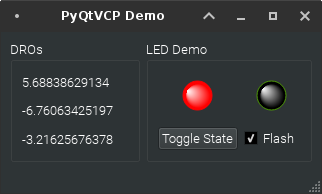

QtPyVCP: PyQt5 based Virtual Control Panel toolkit for LinuxCNC¶
QtPyVCP is a PyQt5-based framework for building Virtual Control Panels (VCPs) for the LinuxCNC machine controller. The goal is to provide a no-code, drag-and-drop system for making simple VCPs, as well as an easy to use and expand python framework for building complex VCPs.
QtPyVCP is designed with the philosophy that it is impossible to predict and satisfy everyones needs, but it is possible to make it easy(er) for people to satisfy their own needs. Hence QtPyVCP's goal is to pride a rich set of utilities and basic widgets that can easily be built on, extended and combined, with minimal (if any) python code to create a fully custom VCP.
Screenshot¶

Prerequisites¶
- LinuxCNC ~2.8pre (master)
- Python 2.7
- Qt 5
- PyQt 5
DISCLAIMER¶
THE AUTHORS OF THIS SOFTWARE ACCEPT ABSOLUTELY NO LIABILITY FOR ANY HARM OR LOSS RESULTING FROM ITS USE. IT IS EXTREMELY UNWISE TO RELY ON SOFTWARE ALONE FOR SAFETY. Any machinery capable of harming persons must have provisions for completely removing power from all motors, etc, before persons enter any danger area. All machinery must be designed to comply with local and national safety codes, and the authors of this software can not, and do not, take any responsibility for such compliance.
This software is released under the GPLv2.